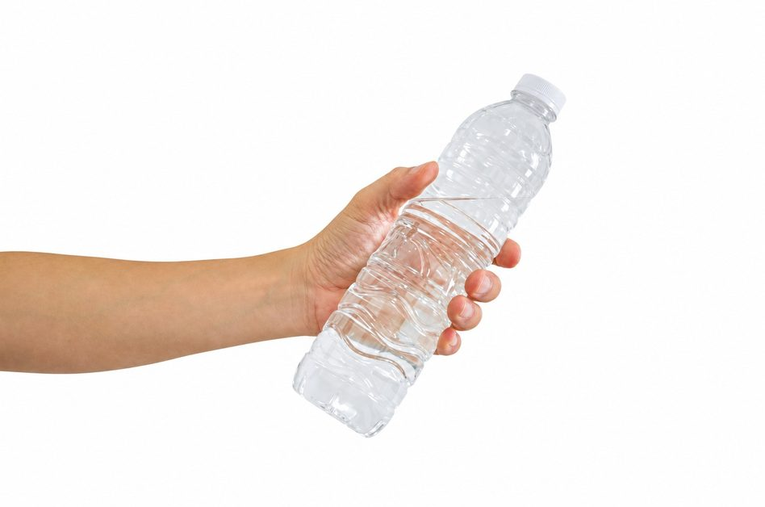

التمرين هو أفضل طريقة لتعزيز التعلم
3 أسئلة
أجيبوا بشكل صحيح على سؤالين أو أكثر للمتابعة.
أكملوا:
1 مل =
سم³.
أمامكم قنينة مياه شخصية. بناءً على معرفتكم الشخصية، ما حجمها؟

إذا كان 1 لتر = 1,000 مل، إذن:
أ. في 3 لترات يوجد
مل.
ب. 500 مل هي
لتر.
عمل رائع!
فيما يلي تمرينان إضافيان بمستوى صعوبة أعلى
أنا واثق من أنكم ستنجحون!
أكملوا القيم:
3 لترات =
مل =
سم³ =
م³
كُتب في مقال صحفي: "تلقّى المريض جرعة مقدارها 5 لترات من الشراب الدوائي".
ما المشكلة في هذه الجملة؟